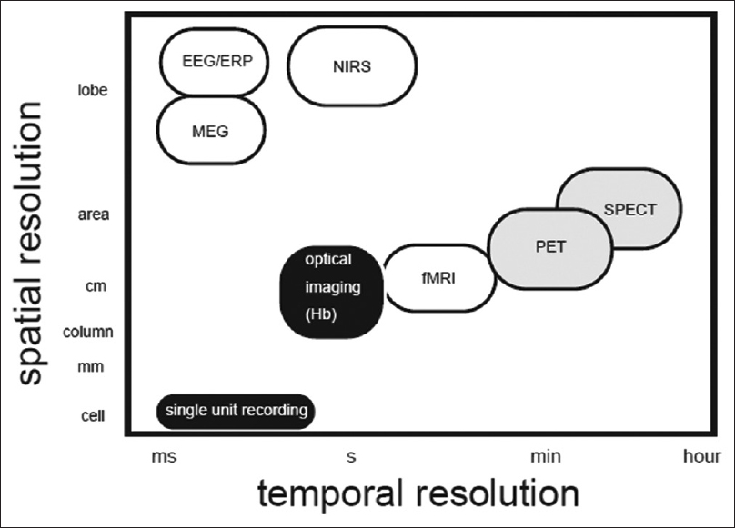
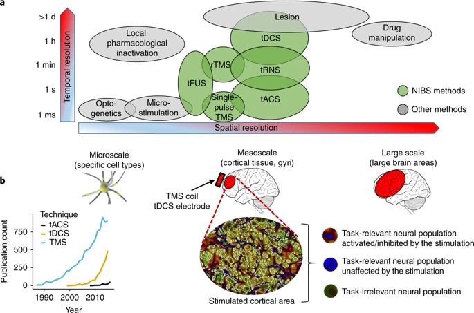

脑科学专业简述¶
研究脑科学的层次¶
当今时代关于大脑和心智的研究日新月异。脑科学、神经科学、心理学、认知科学、人工智能……这些领域飞速发展，边界日益融合。给这些学科下一个精确定义对我们在这里的目标而言并不必要。我们先简略提及研究大脑和心智的不同层次和尺度，并推荐有兴趣的读者自行阅读相关书籍和文献。
按研究的空间尺度，大致可以粗略地分为：
- 分子：如在基因、蛋白等分子(molecular)尺度上理解神经元的结构、功能。
- 细胞：如在细胞/亚细胞(cellular)的尺度上理解神经元的结构、功能和相互作用。
- 环路：如数十到数万神经元构成的群体。
- 脑区：如视觉系统的不同组成脑区。
- 系统：如视觉系统、听觉系统等(systems)。
- 行为：如人类和动物的正常或异常的认知功能(cognitive)和行为(behavioral)。
- 社会：如人类和动物之间的社会交互(social)。
有时候人们会使用一个简单粗暴的神经/认知二分法：越微观的越偏神经，越宏观的越偏认知，分界线大致位于环路-脑区这一层次。尺度的不同决定了研究对象、手段方法、解释哲学和审美取向的不同。笔者主要研究3-7的尺度，后文也将以此举例。
按研究采用的手段，可以分为三类：
- 临床类：如神经病学、精神病学、神经外科学等，医学为主。
- 实验类：以各种实验为主要手段，辅以少量数据分析。
- 计算类：以理论分析、计算建模、数据分析为主研究各个层次的问题，神经科学和认知科学都大量采用计算的方法。
受研究领域所限，我们以下主要关注实验和计算方向。
实验方法¶
脑科学主要还是一门实验学科，因此如果真正对脑科学实验方面感兴趣的同学，会有一些技能树需要点一下，在拥有这些技能树以后，你就会理解脑科学绝大部分研究到底是怎么一回事，然后告诉教授你会做这个这个，也会帮助你更快的上手科ban研zhuan。
因为这不是一本脑科学的教材，在这里笔者主要简单介绍这个方法是做什么的，然后给一些综述（review）和paper（提供例子）网站之类的方便大家了解，在可以自己练习的技能上，笔者会提供一些链接和材料。囿于笔者研究方向所限，这里缺少关于分子、细胞水平的实验介绍，欢迎了解的读者投稿补充。
行为学¶
这里以老鼠为例介绍行为学研究。
传统行为学¶
传统行为学比如水迷宫，矿场等，在老鼠行为学方面Stanford这个lab有一个非常好的网站，介绍了各种行为分类下的各种范式（学习记忆，社交，感知等）。比如说https://med.stanford.edu/sbfnl/services/bm.html。
高级行为学¶
比如研究老鼠的决策、工作记忆等等高级认知过程，需要比较复杂但是自动化的行为训练。现在实验室比较常用的行为设备比如bpod(https://sites.google.com/site/bpoddocumentation/home)、bcontrol(https://brodylabwiki.princeton.edu/bcontrol/index.php/Main_Page)。
可以提前自学了解其基本原理，了解行为训练范式的构建。这些需要读论文来了解。这类研究需要更强的工科/计算机背景，因为要编写大量自动化的行为程序。
行为-视频数据分析¶
结合深度学习的计算机视觉，对动物行为的视频做分析，这也是目前很多实验室都在做的技术。通过一些开源工具比如
deep lab cut (https://github.com/AlexEMG/DeepLabCut)、JAABA (https://www.janelia.org/open-science/jaaba®)。
系统神经实验¶
手术¶
手术是做实验研究核心技能。所有的老鼠的操作，落地都依赖于对老鼠手术的技能。如果手术做不准确，脑区没有打准，实验上会出现很大的偏差。所以如果做神经科学，本科／硕士就有很好的手术技能，对申请一定是个加分点。这里主要是需要会脑区定位的技能和经验。手术主要是打染料（dye），打病毒，埋光纤，埋电极，开颅窗等。
神经活动信号记录有神经科学公开的数据网站https://openneuro.org/，可以找数据自己练，还有其他网站，很多论文后面也会附数据。
c-fos¶
c-fos是神经元发放后细胞内会迅速表达的基因，可以通过切脑片后染色然后统计细胞观察。主要需要取脑切片染片等技能。
电生理¶
电生理主要分LFP和spike，可以预先学习的比如电生理系统(open ephys)的构成，如何使用。
电生理数据分析：spike sorting, 做spike filter，PETH(Peri-Event/Stimulus Time Histogram)，做高维度的电生理数据分析，decoding fiber photometry。spike sorting可以学学软件，比如说mountain sort, JRCLUST。
JRCLUST (https://github.com/JaneliaSciComp/JRCLUST/wiki)
mountain sort (https://mountainsort.readthedocs.io/en/latest/)
通过光纤记录GCamp信号之类的，但是空间分辨率比较低。不过成本不如双光子高，结合各种sensor可以看多巴胺信号之类多种神经递质的modulation。研究Neuromodulation，下丘脑之类的非常常用。主要是做PETH之类的和event对齐分析激活水平。
two-photon¶
双光子可以学一学预处理，分细胞的软件，比如suite2P（https://github.com/cortex-lab/Suite2P）。另外也需要一些搭光路之类的技能，这些大部分都需要在实验室实操中学到。
神经干预: (manipulation)
药物注射：muscimol, CNO
通过药物在较长的时间调节某个脑区的活动熟悉打药。主要需要的技能就是颅内定位注射手术，注射CNO：打病毒，腹腔注射之类的偏生物的技能
光遗传¶
这个各种介绍的非常多，要熟悉一些老鼠系（Cre Transgenic Mouse Lines），可以用的载体，病毒，很多文章都有非常详细的介绍。
(https://doi.org/10.1016/j.neuron.2011.06.004)
(https://doi.org/10.1038/nmeth.f.324)
光遗传硬件设备都有很成熟的解决方案。不过近年来比较火的是双光子光遗传：optogenetics holographic stimulation，直接可以精确的刺激到某个细胞。
在做光遗传，双光子，fiber photometry的时候，有一些光学背景，熟悉如何搭光路，调激光会是很有用的技能。
在做电生理的时候，有一些电类工科方面的背景，熟悉数电，模电，或者生理信号测量都是很有用的技能，在电生理系统搭建，调试，用的时候解决各种信号不良小问题都会很有用。
上述技能主要分为： 1. 低阶技能，读文章，读手册，下载数据在自己电脑上试试就可以学到技能，比如fmri数据分析，电生理数据分析，看文章的基础知识； 2. 需要本科课程的学习，然后有一些实操经验的，比如模电数电背景（会做板子，单片机），光学光路背景； 3. 本校实验室可以学到的技能：开颅手术，灌老鼠切脑片染片子跑胶等； 4. 高级技能，相应实验室才可以学：老鼠高级行为的训练，双光子等等。
大家可以依情况循序渐进的学习，掌握。
其他技能¶
灌老鼠 (perfusion)
切脑片
染片子上显微镜
跑胶
影像¶
fMRI¶
偏认知神经科学的工具，可以提前在coursera上fMRI的网课学习一些基本概念，读Handbook of Functional MRI Data Analysis (by Russell A. Poldrack)，包括了数据预处理、各种统计模型和可视化的基本介绍与规范。熟悉一些fMRI数据处理的基本流程，用工具实操下(free surfer, SPM)。然后再找一些数据做MVPA，decoding这样的操作来学习。还可以做fMRI network的分析，这也可以找到一些网上公开的数据来学习。做fMRI主要需要学习的知识是物理类的（数据采集）信号处理类（预处理）和统计类。

上面的图说明不同成像方法的差异。
EEG¶
同样也是偏认知神经科学的工具，通过分析神经元的电信号在头皮处的总体反应，来研究环路或脑区层次的交互关系。这个领域常用的工具包是eeglab：https://sccn.ucsd.edu/eeglab/index.php。
EEG和fMRI相比，它的优势是设备小巧，便于携带，对实验条件的要求不高，可以直接应用于课堂或者是小心理诊所中；并且它也有更高的时间精度 (temporal precision)。缺陷是缺乏空间精度，目前最精细的也就是把整个大脑的电信号分为128块，对基础的研究分析都有一些阻碍。
目前以EEG作为主要或唯一研究手段的实验室不多，最集中在UCSD（也是eeglab的发源地）。现在EEG做的好的组基本都和UCSD有过联系，如在那里当过学生或博士后等，感兴趣的同学可以关注一下。做EEG主要需要学习的知识是信号处理类（预处理）和统计类（数据分析）。
脑机接口以及神经工程¶
非侵入脑机接口¶
无创脑机接口常用的方式主要是三种，P300，SSVEP（视觉诱发电位）以及运动想象。
P300与SSVEP原理类似，都是通过被试观看屏幕上自己选择的闪烁的视觉刺激，然后再分析EEG时域/频域信号决定被试看的是哪个刺激，从而作出选择。
P300来源于顶头皮记录到的300ms正向成分，一般在oddball范式中出现（能够引起特殊活动小概率出现的事件）。在P300范式中，小概率主要就是一个以小概率闪烁的图形刺激。不同刺激对应不同的概率，可以产生不同幅度大小的P300。通过对主要是实时提取出来P300时域大小的刺激进行分析，来decode被试的选择。
参考：Fazel-Rezai, R., Allison, B. Z., Guger, C., Sellers, E. W., Kleih, S. C., & Kübler, A. (2012). P300 brain computer interface: current challenges and emerging trends. Frontiers in neuroengineering, 5, 14.
SSVEP对应的是屏幕上呈现不同频率的刺激，被试通过注视来选择。然后可以在视觉皮层来源的EEG信号内记录到对应频率的谐波，通过实时提取这个频域的特征来解码（decoding）被试的选择。
参考： Allison, B., Luth, T., Valbuena, D., Teymourian, A., Volosyak, I., & Graser, A. (2010). BCI demographics: How many (and what kinds of) people can use an SSVEP BCI?. IEEE transactions on neural systems and rehabilitation engineering, 18(2), 107-116.
Beverina, F., Palmas, G., Silvoni, S., Piccione, F., & Giove, S. (2003). User adaptive BCIs: SSVEP and P300 based interfaces. PsychNology Journal, 1(4), 331-354.
第三种是运动想象。主要利用被试想象不同运动（比如左/右手的运动）时时域pattern不一样来解码被试的选择，这个不需要特定刺激的呈现。但是需要实时的算法，可以输出的目标数不如前两种多，而且准确率不那么高，算法有很大优化的空间。
Ramoser, H., Muller-Gerking, J., & Pfurtscheller, G. (2000). Optimal spatial filtering of single trial EEG during imagined hand movement. IEEE transactions on rehabilitation engineering, 8(4), 441-446.
近期有 Meng, J., Zhang, S., Bekyo, A., Olsoe, J., Baxter, B., & He, B. (2016). Noninvasive electroencephalogram based control of a robotic arm for reach and grasp tasks. Scientific Reports, 6, 38565.
fMRI Real-time decoding
还有一种非主流的就是通过fmri实现的脑机接口，主要是实时的解码运算来实现，比较经典的比如这个文章：
Miyawaki, Y., Uchida, H., Yamashita, O., Sato, M. A., Morito, Y., Tanabe, H. C., ... & Kamitani, Y. (2008). Visual image reconstruction from human brain activity using a combination of multiscale local image decoders. Neuron, 60(5), 915-929.
对于这些主流脑机接口方面的学习，可以通过看各种文章，熟悉相关算法，熟悉EEG的测量。然后自己从各个层次学习如何实践：1）MATLAB算法实现；2）底层语言更强实时性的实现；3）FPGA/DSP上实时算法实现；4）自制EEG测量平台结合FPGA/DSP/上位机实现等。用FPGA/Veriog之类的实现还可以往芯片方面靠。另外也可以关注国内主流的课题组：清华高小蓉，天大明东等，西安交大徐光华等，从而可以获得一些机会。
侵入式脑机接口¶
侵入式脑机接口基本就是直接把电极放到人的感觉皮层/运动区域等，直接从神经元的spike train或者LFP里面得到实时性更好，维度更高、更直接的信号。但是这个研究需要病人，伦理等要求非常非常高。这里只给出最近的一些研究大家自己参考。
Flesher, S. N., Collinger, J. L., Foldes, S. T., Weiss, J. M., Downey, J. E., Tyler-Kabara, E. C., ... & Gaunt, R. A. (2016). Intracortical microstimulation of human somatosensory cortex. Science translational medicine, 8(361), 361ra141-361ra141.
Charvet, G., Foerster, M., Chatalic, G., Michea, A., Porcherot, J., Bonnet, S., ... & Reverdy, J. (2012, August). A wireless 64-channel ECoG recording electronic for implantable monitoring and BCI applications: WIMAGINE. In 2012 Annual International Conference of the IEEE Engineering in Medicine and Biology Society (pp. 783-786). IEEE.
Choi, J. R., Kim, S. M., Ryu, R. H., Kim, S. P., & Sohn, J. W. (2018). Implantable Neural Probes for Brain-Machine Interfaces–Current Developments and Future Prospects. Experimental neurobiology, 27(6), 453-471.
脑活动水平监测（神经工程应用）¶
无创记录相关的神经工程方面的应用还有比如脑活动水平监测（麻醉深度监测）。麻醉深度监测主要是有BIS, Narcotrend, 信息熵，复杂度(L-Z Complexity)分析等，主要是通过神经信号（fNIRS或者EEG）提取高阶/非线性特征，从而建立其与脑活动水平的关系。
如果对这方面工作感兴趣的话，可以首先通过MATLAB等高级语言，能够完整的实现相关算法，想办法改建算法或者在更低层的设备上（FPGA，DSP）进行更高效率的实现。可以参考下面这些文章，以及这些文章引用的相关算法文章。
Purdon, P. L., Pierce, E. T., Mukamel, E. A., Prerau, M. J., Walsh, J. L., Wong, K. F. K., ... & Ching, S. (2013). Electroencephalogram signatures of loss and recovery of consciousness from propofol. Proceedings of the National Academy of Sciences, 110(12), E1142-E1151.
Zhang, X. S., Roy, R. J., & Jensen, E. W. (2001). EEG complexity as a measure of depth of anesthesia for patients. IEEE transactions on biomedical engineering, 48(12), 1424-1433.
Morlet, D., Bertrand, O., Salord, F., Boulieu, R., Pernier, J., & Fischer, C. (1997). Dynamics of MLAEP changes in midazolam-induced sedation. Electroencephalography and Clinical Neurophysiology/Evoked Potentials Section, 104(5), 437-446.
Jensen, E. W., Nygaard, M., & Henneberg, S. W. (1999). On-line analysis of middle latency auditory evoked potentials (MLAEP) for monitoring depth of anaesthesia in laboratory rats. Medical engineering & physics, 20(10), 722-728.
结合EEG的康复训练（神经工程应用）¶
结合脑机接口的康复工程训练主要是通过神经信号，引入反馈，从而帮助脑损伤、中风之类的造成的肢体控制的后遗症。通过躯体动作+神经信号解码的反馈可以逐步诱导运动功能的恢复。这方面可以参考以下文章。除了神经科学，这主要是康复工程（生物医学工程）的研究范围。
Cervera, M. A., Soekadar, S. R., Ushiba, J., Millán, J. D. R., Liu, M., Birbaumer, N., & Garipelli, G. (2018). Brain‐computer interfaces for post‐stroke motor rehabilitation: a meta‐analysis. Annals of clinical and translational neurology, 5(5), 651-663.
Van Dokkum, L. E. H., Ward, T., & Laffont, I. (2015). Brain computer interfaces for neurorehabilitation–its current status as a rehabilitation strategy post-stroke. Annals of physical and rehabilitation medicine, 58(1), 3-8.
非侵入性刺激¶
非侵入性刺激多数时候应用在临床治疗中，例如利用经颅磁刺激治疗抑郁症、失眠等，利用经颅直流电刺激治疗精神分裂症等，有时还可以和脑机接口相结合，辅助病人的康复训练。但在脑科学研究中，非侵入性刺激的另一大作用是，人为地调节神经活动，从而研究神经活动和行为的因果关系。
几种主要的非侵入性脑刺激在时间、空间上的作用尺度对比如下图。总的来说，几种方法在时间尺度上有较大差异，但空间尺度上均算是中等尺度，即多数时候用于调节皮层表面的局部脑活动（但也有研究表明可以影响到脑网络的活动）。接下来简要介绍其中3种方法。

(图片来源Polanía, R., Nitsche, M.A. & Ruff, C.C. Studying and modifying brain function with non-invasive brain stimulation. Nat Neurosci 21, 174–187 (2018). https://doi.org/10.1038/s41593-017-0054-4)
经颅磁刺激（TMS）¶
TMS利用电磁感应，通过外加磁脉冲激发局部皮层神经元的电流，从而调控皮层电活动。对于科研应用而言，TMS本身的实验操作比较简单，易上手，只需要学习仪器和配套软件的用法，但除行为学以外，TMS的作用效果常常通过脑电、肌电信号等反映出来，因此仍需要一定的信号处理基础。
经颅直流电刺激（tDCS）¶
tDCS通过在大脑各种部位放置电极对，使得微弱的直流电通过大脑皮层流过电极对（0.5-2mA），从而调节皮层兴奋性及改变突触可塑性。tDCS本身的实验操作并不复杂，但是如何放置电极，如何设计刺激方式和参数，会涉及到电场的模拟，因此需要一定的物理基础和编程经验。与此同时，为了提升刺激的效果和深度，有时研究者还需要自行设计新的刺激方法，自己搭建仪器，需要一些电子电路的知识。
经颅交流电刺激（tACS）¶
和tDCS相比，tACS的特别之处在于，它的正弦交流电属性使它可以模仿人内源性的脑电活动，并与内源脑电耦合，通过改变电流的强度、相位、频率、电极摆放位置，对多种频段的脑电活动进行强化或抑制。学习tACS和tDCS类似，都需要有信号处理、电场模拟，甚至电子设计等方面的基础。
计算方法¶
和脑科学多个层次的特性一样，通过理论/计算模型来研究脑/神经系统也有明显的在不同层次上的模型，这些理论和模型是计算神经科学、计算认知科学关注的对象。借用 David Marr 的层次分析(three levels of analysis) 作为讨论的框架，计算神经科学的理论通常从规范性原则 (normative principle) 出发来定义生物所需要解决的计算问题 (computation)，找到相应的算法 (algorithm)，再进一步提出对神经实现的预测 (implementation)。而根据具体研究的问题本身，所用到的相应的理论工具也会不同。这里我们通过几个例子来列举计算神经科学中常用的理论方法：
| Normative Principle | Algorithm | Implementation |
|---|---|---|
| Reinforcement Learning | Temporal-difference Learning | Phasic activities in dopamine neurons (Schultz et al., 1997) |
| Bayesian Inference | Markov Chain Monte Carlo | Stochastic activists in sensory cortex (Berkes et al., 2011) |
| Bayesian Inference | Sequential Probability Ratio Test | Drift-diffusion model (Gold & Shadlen, 2007) |
| Information Theory | Histogram Equalization (Efficient Coding) | Tuning curve of retinal ganglia cell (Barlow, 1961) |
| Optimal Feedback Control | Minimal Intervention Principle | Activities in the primary motor cortex (M1) (Scott, 2004) |
| Goal-Driven Learning | Deep Neural Network | Representation in the V4/IT (Yamins et al., 2014) |
另外，在研究神经环路的实现的问题上，动力系统 (dynamical system) 可以提供一种非常有效的分析方式：就像研究计算机系统的实现需要数字电路的工具一样，神经系统的特征和行为往往可以被描述成一个由许多相互作用的节点构成的在时间上连续变化的系统，并使用相应的工具进行描述。
David Marr 的理论框架，以及我们在上面所列举的计算神经科学的研究方式，可以被总结为一种自上而下的 (top-down) 方法论。这种方法论通常和规范性原则 (normative principle) 又是紧密结合的。 在神经科学中，自下而上 (bottom-up)，从数据出发，试图建立起描述性模型 (descriptive model) 或理论的方法也被广泛采用。这些方法往往可以被视为统计与数据科学 (statistic and data science) 在神经和行为数据上的应用。我们这里也举几个有代表性的例子：
| Method | Application in Neuroscience |
|---|---|
| Generalized Linear Model | Linear-nonlinear model, spike-triggered average analysis (Schwartz et al., 2006) |
| Classification (e.g., Support Vector Machine) | fMRI multi-voxel pattern analysis (Norman et al., 2006) |
| Denoising; Mixture Model | Analysis of calcium imaging data (Pnevmatikakis et al., 2016) |
| Network science | Analysis of connectiveity data (Bassett et al., 2011) |
在建立描述性模型的过程中， 我们也需要合适的工具和语言。我们上面已经提到了动力系统，更广泛的来说，这涉及到生物物理学 (biophysics) 的范畴。这个方向最经典的例子是对单个神经元放电的模型 Hodgkin-Huxley Model，以及再次基础上进一步拓展的对于神经元形态进行考虑的 Multi-compartment Models (参考 Theoretical Neuroscience, Ch 5 and Ch 6, Dayan & Abbott, 2001)。
可以看到，计算神经科学的理论工具大多来自于统计/工程科学/人工智能/物理等领域。有志于计算神经科学研究的同学可以在自己的知识体系构建的过程中，有意识的培养自己的数学、统计、物理以及工程实现的能力；同时拓宽在理论知识方面的积累。
脑科学相关期刊和学术会议¶
脑科学的子领域很多，每个领域都有自己相当数量的学术期刊和会议，这里就不一一列举了。为了掌握领域的现状、动态和活跃学者，你应大致了解自己领域的顶级的和有声誉的期刊和会议，及综合类期刊（如Nature, Science, PNAS, NC, SA）等等。除此之外，很多脑科学的文章也可能发表在其他领域的期刊会议上，如计算神经常发的计算机/人工智能的会议（NeurIPS、ICML、ICLR）和物理的期刊（PRL、Physical Review系列）。
国内国外的计算课题组¶
这里我们列举一些按照学校组织的计算方向的研究组(PI)。由于笔者个人研究的偏好，只反映了这个领域的一部分研究方向，肯定有遗漏，仅供大家参考。
University of Washington: Adrienne Fairhall (sensory coding, dynamical system), Emily Fox (stistical analysis of neural data), Rajesh Rao (brain-computer interface), Eric Shea-Brown
https://cneuro-web01.s.uw.edu/people/faculty/
西雅图还有 Allen Institute for Brain Science，不过他们应该是没有PhD学生的。或许在UW的组可以有许多和他们合作的机会。
UC Berkeley: Bruno Olshausen (computational vision), Jack Gallant (fMRI data analysis), Anne Collins (reinforcemenet learning).
Stanford University: Surya Ganguli (analysis of neural data), Jay McClelland (parallel distributed processing), Justin Gardner (vision), Daniel Yamins (neural network, computational vision), Krishna Shenoy, Shaul Druckmann, David Sussillo, Scott Linderman
UCLA: Dario Ringach (vision) Itzhak Fried (human spike data)，Keith Holyoak (analogy, reasoning), Hongjing Lu (visual perception), Hakwan Lau (megacognition), Ladan Shams (multisensory integration), Dean Buonomano
http://www.bri.ucla.edu/research/affinity-groups/computational-neuroscience-affinity-group
Caltech: Dean Mobbs (social decison-making), John P. O'Doherty (reinforcement learning), Doris Tsao (visual perception), Antonio Rangel, Richard Andersen
https://www.cns.caltech.edu/people/index.html
UC Irvine: Aaron Bornstein (reinforcement learning), Megan Peters (bayesian model, megacognition).
UCSD: Angela Yu (Bayesian model, decision-making), Marcelo Mattar (reinforcement learning, network neurosciecne), Lara Rangel (dynamical system model), Timothy Brady (vision and memory), Judith Fan (computational cognitive neuroscience), Ed Vul (bayesian/probabilistic models), Terry Sejnowski (Salk), Tatiana Sharpee (Salk), Marcus Benna, Johnatan (Yonatan) Aljadeff
U Minnesota: Kendrick Kay (vision, fMRI), Paul Schrater (Bayesian/probabilistic model), Daniel Kersten (Bayesian/probabilistic model)
UT Austin: Lawrence Cormack (visual neuroscience), Wilson Geisler (visual perception), Mary Hayhoe (sensory motor system), Xue-Xin Wei (theoretical neuroscience), Robbe Goris (visual neuroscience), Alex Huth, Alex Huk
https://liberalarts.utexas.edu/cps/faculty/index.php
U Chicago: Nicholas Hatsopoulos (motor system) Matthew Kaufman (motor system) Jason Maclean, David Freedman (decision-making, dynamical system), Stephanie Palmer (neural coding), Wei Wei (computation in retinal circuit), Brent Doiron
https://cns.uchicago.edu/program/faculty
U Rochester: Ralf Haefner (Bayesian/probabilistic models), Robert Jacobs (Bayesian/probabilistic models), Ariel Zylberberg (Bayesian/probabilistic models).
Brown: Michael Frank (reinforcement learning, computational psychiatry), Amitai Shenhav (decision making, neuroimaging), Oriel FeldmanHall (social), Thomas Serre (computational vision).
MIT: Josh Tenenbaum (computational cognitive science), James DiCarlo (visual neuroscience), Michale Fee (reinforcement learning), Ila Fiete (computation in neural circuits), Mehrdad Jazayeri (computation in neural circuits).
Harvard: Sam Gershman (reinforcement learning, computational cognitive science), Jan Drugowitsch (sensory system), Tomer Ullman (computational cognitive science), Cenzig Pehlevan.
Columbia: John Cunningham (analysis of neural data), Liam Paninski (analysis of neural data), Larry Abbott (theoretical neuroscience), Daniel Wolpert (sensory-motor system), Nikolaus Kriegeskorte (visual neuroscience), Elias Issa (visual neuroscience), Michael Shadlen (decision-making), Ken Miller, Stefano Fusi,Ashok Litwin-Kumar, Sean Escola
https://zuckermaninstitute.columbia.edu/computation
NYU: Eero Simoncelli (vision, image processing), Cristina Savin (probabilistic models), Xiao-Jing Wang (dynamical system model), Roozbeh Kiani (decision-making), David Heeger (vision, fMRI), John Rinzel, Wei Ji Ma (planning and reinforcement learning), Todd Gureckis (computational cognitive science), Brenden Lake (computational cognitive science), Catherine Hartley (developmental, neuroimaging), Dmitri Chklovskii
Princeton: Nathaniel Daw (reinforcement learning), Yael Niv (reinforcement learning, computational psychiatry), Jonathan Pillow (analysis of neural data), Kenneth Norman (learning and memory), Tom Griffiths (cognition), Sebastian Seung, Bill Bialek, Tim Buschman, Carlos Brody, David Tank, Michael Berry
UPenn: Danielle Bassett (network neuroscience), Konrad Kording (analysis of neural data), David Brainard (visual perception), Johannes Burge (visual perception), Alan Stocker (Bayesian/probabilistic models), Anna Schapiro (learning and memory), Joshua Gold (decision-making), Joe Kable (decision making) https://cni.upenn.edu/people
CMU: Byron Yu, Rob Kass, Tai Sing Lee
University of Pittsburgh: Bart Ermentrout, Chengcheng Huang
UC Davis: Mark Goldman, Rishidev Chaudhuri, Shizhe Chen
Boston University: Uri Eden, Nancy Kopell, Rachel Denison (perception)
Yale: John Murray, Julian Jara-Ettinger (developmental), Samuel D. McDougle (motor), Robb Rutledge (computational psychiatry)
Duke: Nicolas Brunel, Jeff Beck
Johns Hopkins: Joshua Vogelstein, Reza Shadmehr, Alan Yuille
USC: Barlett Mel
ETH Zurich/University of Zurich: Klaas Enno Stephan (computational psychiatry, neuroimaging), Todd Hare (neuroeconomics), Christian Ruff (neuroeconomics), Phillippe Tobler (nueuroeconomics), Rafael Polonia (decision making), 参考 https://www.neuroscience.uzh.ch/en/research/computation_modeling.html
UCL: Karl Friston (free energy principle), Ray Dolan (computational psychiatry), Steve Fleming (metacognition), Tobias Hauser (computational psychiatry), Quentin Huys (computational psychiatry), Dominik Bach (computational psychiatry)；还有Gatsby Computational Neuroscience Unit的Arthur Gretton, Peter Latham, Maneesh Sahani, Peter Orbanz
MPI: Peter Dayan (decision making), Falk Lieder (resouce rationality)
ENS Paris: Stefano Palminteri (computational psychiatry, decision making), Valentin Wyart (reinforcement learning), Etienne Koechlin (decision making)
Cambridge: Mate Lengyel, Guillaume Hennequin
Oxford: Timothy Behrens, Paul Bays
U Edinburgh: http://web.inf.ed.ac.uk/anc/research/neuroscience
国内的计算神经科学组:
NYU Shanghai: Jeffrey Erlich, Sukbin Lim
北京大学：吴思，陶乐天
上海交大：李松挺, 周栋焯
南科大：刘泉影
中科大：温泉
北师大：王大辉、斯白露
电子科技大学：郭大庆
香港科技大学: Yu Hu, K. Y. Michael Wong
香港浸会大学: Changsong Zhou
另外有https://compneuroweb.com/labs.html这个网站也介绍了计算神经科学的部分课题组。
资源¶
*表示外网链接，可能需要科学上网
找phd职位¶
- Foundation of European Neuroscience Societis: * https://www.fens.org/News-Activities/Jobs/, 欧洲一个很好的博士和博士后招聘网站，也有部分是北美和澳洲的招聘，有发布即更新。
- Find a PhD: * https://www.findaphd.com
- AcademicTransfer：https://www.academictransfer.com/en/ 针对荷兰的岗位
- Nature careers: https://www.nature.com/naturecareers?gclid=Cj0KCQjw3Nv3BRC8ARIsAPh8hgLzBvuRHk9lJxhAmxorIJnFPYDiu_EtI5dRDi5rQJlWRW_YE74c37saAj8nEALw_wcB
线上课程¶
一些免费网课平台，以及上面的脑科学课程：
- Coursera * https://www.coursera.org Principles of fMRI，是一个比较易懂的fMRI入门课程，这门课国内也有志愿者做了翻译，发布在知乎专栏里; Computational Neuroscience, 很受欢迎的计算神经课程，UWashington的Rajash Rao教授 和 Adrienne Fairhall教授 主讲的； Understanding the Brain, The Neurobiology of Everyday Life, 神经生物入门，UChicago的Peggy Mason教授主讲； Medical Neuroscience, Duke University 的Leonard White教授主讲，同样好评如潮; Introduction to Psychology, Yale University；
- EdX * https://www.edx.org Neuronal Dynamics, 另一个计算神经的课程，EPFL的 Wolfram Gernster教授主讲，他的主页有他的MOOC视频链接，教科书电子版的链接，https://icwww.epfl.ch/~gerstner/ ； Simulation Neuroscience;
- Khan Academy * https://www.khanacademy.org 非生物的同学可以用来补救生物知识
- 免费教材/教程lianjiehuizong：https://docs.google.com/document/d/1-bCC6IfhNvrqzwAp8yqFSfsdqL3n5oThZ2lXYrgBnhg/edit
- MIT OpenCourseWare * https://ocw.mit.edu/index.htm
- BiliBili 【ION神经所】上传的 蒲慕明院士 的直播课录像
- iBiology * https://courses.ibiology.org
有很多生物界大佬的讲课视频，包括Neuroscience方向 https://www.ibiology.org/research-talks/neuroscience/ 。其中有关于显微镜成像的一系列讲座，可以让大家很快了解神经显微成像的历史和前沿技术 https://www.ibiology.org/online-biology-courses/microscopy-series/；
MOOC 检索网站： Class Central * https://www.classcentral.com ；
YouTube上有大量Seminar/Talk的录像，可以直接搜感兴趣的老师的名字，查看是否有历史记录；另外，强烈推荐 YouTube 上Stanford Prof. Robert Sapolsky 的关于人类行为(Human Behavior)的课程！覆盖范围很广，教授讲课妙语连珠，让人点开后看着停不下来。
研究生院往年录取/毕业数据¶
大部分学校的研究生院都会公布往年录取数据，如申请人数、录取人数和入学人数，还有学生国籍组成等，如 UC San Diego 的研究生院网站上点击【About -> Grad Data -> Admissions】* https://grad.ucsd.edu/about/grad-data/admissions.html 即可得到数据。其他学校可以类似查找。
脑科学相关暑期学校¶
注：每年暑期学校的组织时间都有变化，申请截止日期也都在春季，请有意的读者留心。以下先列举一些暑校资源汇总网址，再列举一些国内外的暑校课程。
注：这些网址覆盖的内容可能互有重合。
Simons Foundation sponsored courses¶
网址： *https://www.simonsfoundation.org/collaborations/global-brain/scgb-sponsored-courses/
暑校地址有：印度、中国苏州、南非开普敦、美国麻省、法国、美国华盛顿州和罗马尼亚。
私人收集的暑校资源¶
*https://github.com/PhABC/neuroSummerSchools 有几十个全球的暑校资源。
国内¶
| 北大-清华生命科学联合中心 | 面向对象 | 神经与认知科学 | 19年网址 |
|---|---|---|---|
| 上海交通大学 | 不限 | 计算神经 | 19年网址 |
| 中国科学院-神经科学研究所 | 大二、大三在校学生 | Primate Neurobiology | 20年网址 |
| 冷泉港亚洲 | 计算认知神经 | 19年网址 | |
| 中国科学院深圳先进技术研究院脑认知和脑疾病研究所 | 脑科学 | 18年网址 | |
| 北大-清华生命科学联合中心（CLS）、北京脑科学与类脑研究中心（CIBR）和北京大学IDG/McGovern脑科学研究所 | 神经与认知科学 | 18年网址 | |
| NYU Shanghai | 研究生，不收本科生 | Neuroeconomics | 18年网址 |
国外¶
| The Marine Biological Laboratory (MBL) (Woods Hole, Massachusetts, US) | Advanced Research Training Courses/研究生 | Neuroscience（有6个细分课程） | *https://www.mbl.edu/education/courses/ |
|---|---|---|---|
| The Okinawa Institute of Science and Technology Graduate University (OIST) (Okinawa, JP) | Computational Neuroscience | *20年网址 | |
| Federation of European Neuroscience Societies (Location varies by year, Europe) | Computational Neuroscience | *20年网址 | |
私人经营的博客/网站¶
国内¶
凝眸NeuroMoment
https://neuromoment.cn ，此网站包含很多前沿的脑科学资讯和资源。
简介如下
我们的网站主要分三个板块：发现、学习和视野。“发现”板块分享神经科学的科普、学习和研究资源，以及相关的经验。“学习”板块整理神经科学具体的知识，目前只是占坑，有待完善。“视野”板块整理了科学家传记、神经科学实验室等信息，帮助大家从历史和世界的角度了解神经科学的发展。另外“搜索”以表格形式呈现实验室、科学家、视频和文档等信息，方便大家搜索。希望这个小站能唤起大家对心智的关注，也希望对大家学习和研究有所帮助！
国外¶
出笔者意外，很多神经科学家在推特上很活跃，以至于这是笔者日常查看最新预印本、收集资源、了解学术圈动态和消遣的重要方式。
NeuroRumblr
http://neurorumblr.com/，此网址覆盖了从申请研究生到找教职阶段的各种资源点击网页上方 【advice】可以查看 【General research advice】，【Applying to grad school】，【PhD-level advice】 等很多非常有帮助的资源。
Growing up in science
* https://www.cns.nyu.edu/events/growingupinscience/unofficial.html ,来自Prof. NYU Wei Ji Ma 主持的，神经科学家们的非官方故事收集。
Fairhall Lab Blog
* https://fairhalllab.com/2013/06/14/pursuing-computational-neuroscience/ University of Washington, Prof. Adrienne Fairhall (Coursera， Computational 神经科学的讲师之一）在计算神经领域发展的一些建议
https://stearnslab.yale.edu/some-modest-advice-graduate-students
其他¶
Reddit(* https://www.reddit.com), The Grad Cafe(* https://forum.thegradcafe.com), Physics GRE Forum (* https://physicsgre.com) 等国外论坛有网友留下的讨论神经科学的记录，可以做参考。虽然其信息密度不大，须要自行搜索、筛选有用信息。
对改进英文写作感兴趣的同学可以参考一下经典之作：Strunk, W. Jr, and E.B. White.1979. The elements of style. 3rd Ed. Macmillan, New York.